<!DOCTYPE html>
<html lang="ml">
<head>
  <meta charset="utf-8">
  <meta name="viewport" content="width=device-width, initial-scale=1.0">
  <title>Chapter 3 (Pages 47-66) - Class 3 Basic_science</title>
  <style>

:root {
  --bg-color: #fcfcfd;
  --card-bg: #ffffff;
  --text-color: #1e293b;
  --text-muted: #64748b;
  --primary-color: #0284c7;
  --primary-light: #e0f2fe;
  --border-color: #e2e8f0;
  --radius: 10px;
  --shadow: 0 4px 6px -1px rgb(0 0 0 / 0.05), 0 2px 4px -2px rgb(0 0 0 / 0.05);
}

body {
  font-family: -apple-system, BlinkMacSystemFont, "Segoe UI", Roboto, "Noto Sans Malayalam", "Manjari", "Gayathri", sans-serif;
  background-color: var(--bg-color);
  color: var(--text-color);
  line-height: 1.8;
  font-size: 1.1rem;
  margin: 0;
  padding: 0;
}

.container {
  max-width: 860px;
  margin: 0 auto;
  padding: 2.5rem 1.5rem 5rem 1.5rem;
}

header {
  margin-bottom: 2.5rem;
  padding-bottom: 1.5rem;
  border-bottom: 2px solid var(--border-color);
}

.badge-row {
  display: flex;
  gap: 0.5rem;
  margin-bottom: 0.75rem;
  flex-wrap: wrap;
}

.badge {
  display: inline-block;
  font-size: 0.75rem;
  font-weight: 700;
  text-transform: uppercase;
  letter-spacing: 0.05em;
  padding: 0.25rem 0.65rem;
  border-radius: 9999px;
  background: var(--primary-light);
  color: var(--primary-color);
}

.badge-medium {
  background: #fef3c7;
  color: #b45309;
}

.badge-class {
  background: #dcfce7;
  color: #15803d;
}

h1 {
  font-size: 2.1rem;
  font-weight: 800;
  margin: 0.5rem 0 1rem 0;
  line-height: 1.3;
  color: #0f172a;
}

.nav-bar {
  display: flex;
  justify-content: space-between;
  margin: 1.5rem 0;
  font-size: 0.95rem;
  flex-wrap: wrap;
  gap: 0.5rem;
}

.nav-bar a {
  color: var(--primary-color);
  text-decoration: none;
  font-weight: 600;
  padding: 0.5rem 1rem;
  border-radius: var(--radius);
  background: var(--card-bg);
  border: 1px solid var(--border-color);
  transition: all 0.2s ease;
}

.nav-bar a:hover {
  background: var(--primary-light);
  border-color: var(--primary-color);
}

.nav-bar .disabled {
  color: var(--text-muted);
  pointer-events: none;
  border-color: transparent;
  background: transparent;
}

.page-section {
  background: var(--card-bg);
  border: 1px solid var(--border-color);
  border-radius: var(--radius);
  box-shadow: var(--shadow);
  padding: 2rem;
  margin-bottom: 2.5rem;
}

.page-header {
  display: flex;
  align-items: center;
  justify-content: space-between;
  margin-bottom: 1.25rem;
  padding-bottom: 0.5rem;
  border-bottom: 1px dashed var(--border-color);
}

.page-number {
  font-size: 0.8rem;
  font-weight: 700;
  text-transform: uppercase;
  color: var(--text-muted);
  letter-spacing: 0.05em;
}

.page-content p {
  margin: 0 0 1.25rem 0;
  white-space: pre-wrap;
  word-break: break-word;
}

.page-content p:last-child {
  margin-bottom: 0;
}

.diagram-card {
  margin: 2rem 0;
  text-align: center;
  background: #f8fafc;
  border: 1px solid var(--border-color);
  border-radius: var(--radius);
  padding: 1rem;
  overflow: hidden;
}

.diagram-card img {
  max-width: 100%;
  height: auto;
  border-radius: calc(var(--radius) - 4px);
  display: inline-block;
  box-shadow: 0 2px 4px rgba(0,0,0,0.04);
}

.diagram-card figcaption {
  font-size: 0.85rem;
  color: var(--text-muted);
  margin-top: 0.75rem;
  font-weight: 500;
}

footer {
  margin-top: 3rem;
  padding-top: 2rem;
  border-top: 2px solid var(--border-color);
}

  </style>
</head>
<body>
  <div class="container">
    <header>
      <div class="badge-row">
        <span class="badge badge-class">Class 3</span>
        <span class="badge badge-medium">Malayalam Medium</span>
        <span class="badge">Basic science</span>
        <span class="badge">Part 1</span>
      </div>
      <h1>Chapter 3 (Pages 47-66)</h1>
      <div class="nav-bar"><a href="part_1_chapter_02.html">← Chapter 2 (Pages 27-46)</a><a href="index.html">☰ Index</a><a href="part_1_chapter_04.html">Chapter 4 (Pages 67-72) →</a></div>
    </header>
    <main>
      <section class="page-section" id="page-47">
  <div class="page-header"><span class="page-number">Page 47</span></div>
  <figure class="diagram-card" id="fig_ch03_p047_01">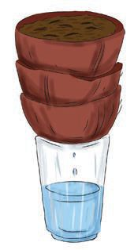<figcaption>Figure fig_ch03_p047_01 (Page 47)</figcaption></figure>
  <figure class="diagram-card" id="fig_ch03_p047_02"><figcaption>Figure fig_ch03_p047_02 (Page 47)</figcaption></figure>
  <figure class="diagram-card" id="fig_ch03_p047_03">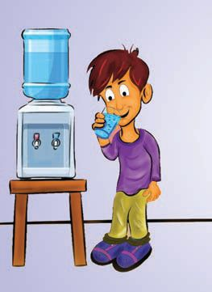<figcaption>Figure fig_ch03_p047_03 (Page 47)</figcaption></figure>
  <figure class="diagram-card" id="fig_ch03_p047_04"><figcaption>Figure fig_ch03_p047_04 (Page 47)</figcaption></figure>
  <figure class="diagram-card" id="fig_ch03_p047_05"><figcaption>Figure fig_ch03_p047_05 (Page 47)</figcaption></figure>
  <div class="page-content">
    <p>sÚ¡“Ǭ¡Ĺ ¡‚‘›†œŽšÚDZ
Œžų§ x›ŽĞs¡‘}Ĺ§ q¢Žšų›c „ǴšŽŒ›}s „ǴšŽŒ›Ğ ‹šuŧ
ˆĚ›¢š ‚›¢š “Ʃs xŽÆ ŒÆ x›ŽĞڎ› mų›“
q¢Žš x›ŽĞs‘›š›†›ƩspŽøš–›†Œs‘›Æx›ŅśÆ
sšų‚¢ˆš¡ Œ
⌜sŽ›Ús g†› Œs‘›¡ x›ŽĞ›Æ
sā›¡“ǫcp’›ă¢†šÚž
xŽÆ
ŒÆ
x›ŽĞڎ›</p>
    <p>mŦš§s¡Ĭś‚§?
m¡ź Ž
ˆŽ›–Žˆ~†ˆǘsśÆm’‚ž
g¢‚ Žœ‚›iˆ¢šu›ăš§ Œ’¡“ǫ –c‹Ž›s‘›ÆzceŽ›¡ă}
ڝų‚§
Ǚšˆ†ā‘›c
“œ}s‘›c s}›¡“ǫc
”ŗœsŽ›Úų‚›†šǫ
iˆsŽāÇiˆ¢šu›ÚšĬ§
”ŗzäšŒcŽžäŒš x›
ŽšzDZ ‘
ā‘›Æs}Æ¡“ǫc
”ŗœsŽ›ă§ s}›¡“ǫŒš›
iˆ¢šu›Úų¡ˆš‚
z“›‚Ž–c“› š†ā‘›ž¡}
“œ}s‘›Æ‹›Úų¡“ǫc“›“› 
z¢Ǟš‚Ǡs‘›Æ†›ų§ ¢”tŽ›ă§
”ŗœsŽ›ă‚š§</p>
    <p>47</p>
  </div>
</section><section class="page-section" id="page-48">
  <div class="page-header"><span class="page-number">Page 48</span></div>
  <figure class="diagram-card" id="fig_ch03_p048_01"><figcaption>Figure fig_ch03_p048_01 (Page 48)</figcaption></figure>
  <figure class="diagram-card" id="fig_ch03_p048_02"><figcaption>Figure fig_ch03_p048_02 (Page 48)</figcaption></figure>
  <figure class="diagram-card" id="fig_ch03_p048_03">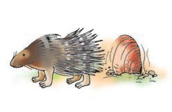<figcaption>Figure fig_ch03_p048_03 (Page 48)</figcaption></figure>
  <figure class="diagram-card" id="fig_ch03_p048_04">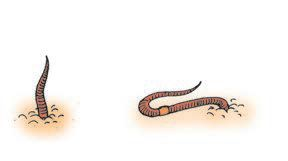<figcaption>Figure fig_ch03_p048_04 (Page 48)</figcaption></figure>
  <figure class="diagram-card" id="fig_ch03_p048_05">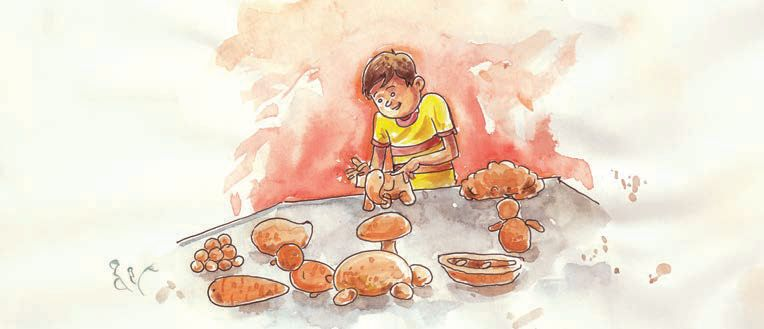<figcaption>Figure fig_ch03_p048_05 (Page 48)</figcaption></figure>
  <figure class="diagram-card" id="fig_ch03_p048_06"><figcaption>Figure fig_ch03_p048_06 (Page 48)</figcaption></figure>
  <figure class="diagram-card" id="fig_ch03_p048_07"><figcaption>Figure fig_ch03_p048_07 (Page 48)</figcaption></figure>
  <div class="page-content">
    <p>ŒĴ›¡źƂš š†Dzc
ŒĴ›¡
Œš‘ā‘›š§
|ā‘¡}
‚šŒ–c</p>
    <p>ŒĴ›š›Žų
Ĵ
|šÄzc
‹›ă¢ƀšÇ
ˆĹ“ų</p>
    <p>|šÄ
mųc
ŒĴ›ÆĹ¡ų</p>
    <p>ŒĴ¡sšĬ§ zŦÚÇڝc ––DZāÇڝcm¡ŦƼǰƂ¢šz†ā
‘šǫ‚§?
†Œ¢Úš?
z</p>
    <p>Օ›Ʃ§</p>
    <p>z
z
z</p>
    <p>Žžˆādž›Åƣ›ÚDZ</p>
    <p>s‘›ŒĴ¡sšĬĬšÚ›ŽžˆāÇsĬ¢Ƽš†ŒÚc g‚¢ˆš¡
iĬšÚ›¢†šÚǰ
†›ādž›Åƣ›ăs‘›ŒÃŽžˆā‘¡}Ƃ„Å”†c –cv}›ƀ›Úž
48</p>
  </div>
</section><section class="page-section" id="page-49">
  <div class="page-header"><span class="page-number">Page 49</span></div>
  <figure class="diagram-card" id="fig_ch03_p049_01"><figcaption>Figure fig_ch03_p049_01 (Page 49)</figcaption></figure>
  <figure class="diagram-card" id="fig_ch03_p049_02"><figcaption>Figure fig_ch03_p049_02 (Page 49)</figcaption></figure>
  <figure class="diagram-card" id="fig_ch03_p049_03"><figcaption>Figure fig_ch03_p049_03 (Page 49)</figcaption></figure>
  <div class="page-content">
    <p>ŽžˆāÇ iĬšÚšÄ iˆ¢šu› ă ŒĴ› ¡ź Ƃ¢‚DZs‚sÇ
m¡ŦƼšŒš§?
†›c‚Ž›s‘¡} “ƀcmų›“ ˆŽ›¢”š ›Úž
†ƣ¡} Ž
ˆŽ›–ŽĹ§mƼš›}ŝŒǫŒĴ§ pŽ¢ˆš¡š¢š#
†ŒÚ§ ˆŽ›¢”š ›Úǰ
ǗžÇŒǮcŒŽă“}§£z“£““› DZi„DZš†cs‘›Ǚcmų›“›}
ā‘›Æ†›ų§ ŒĴ§ ¢”tŽ›ă†›Žœä›Úž
ˆĞ›sˆžÅśšÚž
Ğ
¢”tŽ›ăǚc
Ž</p>
    <p>ŒĴ›¡ź †›c
Ĵ</p>
    <p>ŒǯƂ¢‚Dzs‚sÇ</p>
    <p>†›āÇ¢”tŽ›ăŒĴ›†ā¡‘Ƽǰp¢Ž †›Ĺ›ǫ‚š¢š?
‚Ž›s‘¡} “ƀśÆ“DZ‚DZš–Œ¢Ĭš?
Ž
s¡Ĭ՝sÇm¡ź Ž
ˆŽ›–Žˆ~†ˆǘsśÆm’‚s</p>
    <p>ŒĴ›¡źsƒ</p>
    <p>sžĞsš¢Žm¡ų †›āÇÚ§
ˆŽ›xŒĬ¢Ƽš? |š†š§
ŒĴ§ |šÄˆ‚ŽĹ›c ˆ
“› śŒĬ§q¢ŽšƂ¢„”ŝc
m¡ź –Ǵ‹š“c “DZ‚DZš–¡ƀĞ›Ž›Úc
äځڛ†§ –žä§Œzœ“›s‘c
ˆ £z“v}sā‘cmų›Ĭ§
f›ŽÚÚ›†§ “Å•¡Ĺ
†›ŽŦŽŒš£z“e£z“
Ƃ“Åņā‘›ž¡}š§ |šÄh
“› śÆŽžˆ¡ƀĞ‚§</p>
    <p>49</p>
  </div>
</section><section class="page-section" id="page-50">
  <div class="page-header"><span class="page-number">Page 50</span></div>
  <figure class="diagram-card" id="fig_ch03_p050_01">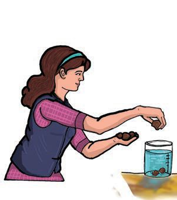<figcaption>Figure fig_ch03_p050_01 (Page 50)</figcaption></figure>
  <figure class="diagram-card" id="fig_ch03_p050_02">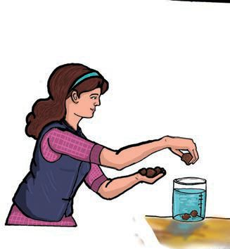<figcaption>Figure fig_ch03_p050_02 (Page 50)</figcaption></figure>
  <figure class="diagram-card" id="fig_ch03_p050_03">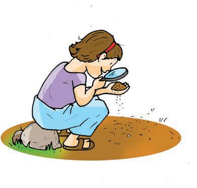<figcaption>Figure fig_ch03_p050_03 (Page 50)</figcaption></figure>
  <figure class="diagram-card" id="fig_ch03_p050_04"><figcaption>Figure fig_ch03_p050_04 (Page 50)</figcaption></figure>
  <div class="page-content">
    <p>ŒĴ›¡ź sƒ¡} ‚}Úc “š›ă¢ƼšŒĴĬšsųƂ⛍¡
ڝ›ă§ sž}‚Æ“›“ŽāÇs¡ĬŞsžĞsšŽŒš›xÅă ¡xƪ§
ŒĴ›¡ź sƒ ˆžÅśšÚ› m¡ź Ž
ˆŽ›–Žˆ~†ˆǘsśÆ
m’‚ž</p>
    <p>ŒĴ›†Ǭ›¡¡ŦƽDZ?
ŒĴ› ǫ
†ǫ›Æs’›ųzœ“›sÇ
n¡‚Ƽǰ?m’‚›¢†šÚž
—šÄ§ ¡Ä–§ iˆ¢šu›ă§
ǗžÇ Ž
ˆŽ›–Ž¡Ĺ ŒĴ§ †›Žœ
ä›Úž
n¡‚Ƽǰ zœ“›s¡‘
s¡ĬŚÄs’›Ě?
g“Ʃš“”DZŒš‹äc zc
“šmų›“m“›¡}†›ųš§ ‹›Úų‚§ ?
g‚›ų‚› 
†š›†ŒÚ§
x› ˆŽœäāÇ¡xƪ¢†šÚǰ</p>
    <p>ŒĴ›¡ “š
ŒĴ›Æ“ši¢Ĭš?
Ĵ
mā¡† s¡ĬĹǰ?
n‚š†ciā›ŒÃsĞsÇ
ā
m}ÚspŽøš–›Æ
¡“ǫ¡Œ}Ĺ§ e‚›¢Ú§
ŒÃsĞsÇg}smŦš§
–c‹“›Úų‚§?s¡Ĭ՝sÇ
sžĞsšŽŒš›ˆÿ“Ʃsc
m¡ź Ž
ˆŽ›–Žˆ~†ˆǘsśÆ
m’‚sc ¡xƭž</p>
    <p>50</p>
  </div>
</section><section class="page-section" id="page-51">
  <div class="page-header"><span class="page-number">Page 51</span></div>
  <figure class="diagram-card" id="fig_ch03_p051_01">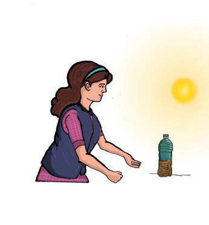<figcaption>Figure fig_ch03_p051_01 (Page 51)</figcaption></figure>
  <figure class="diagram-card" id="fig_ch03_p051_02"><figcaption>Figure fig_ch03_p051_02 (Page 51)</figcaption></figure>
  <figure class="diagram-card" id="fig_ch03_p051_03"><figcaption>Figure fig_ch03_p051_03 (Page 51)</figcaption></figure>
  <figure class="diagram-card" id="fig_ch03_p051_04">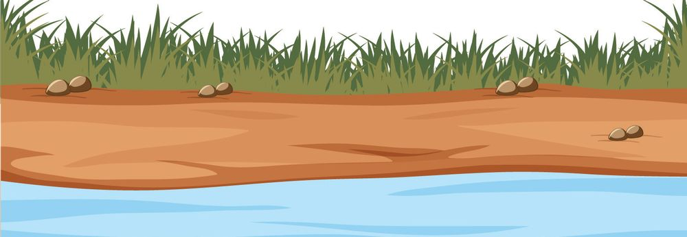<figcaption>Figure fig_ch03_p051_04 (Page 51)</figcaption></figure>
  <div class="page-content">
    <p>ŒĴ›¡zDZ”c
ŒĴ›Æzǰ”Œ¢Ĭš?
mā¡† s¡ĬĹǰ?
£z“£““› DZi„DZš†Ĺ›¡
ŒĴ§ ¢”tŽ›ă§ pŽ–‚šŽDZŒš
sƀ››šÚs ƀ
sƀ›e}ă§
¡“›Ĺ“Ʃs ˆĹŒ›†›Ǯ§
s’›Ě§ ˆŽ›¢”š ›Úž
m¡ŦƼǰ ŒšǮāÇs¡Ĭś?
sƀ›¡} “”ā‘›ÆmŦš§
sšų‚§?
g‚§mā¡† “ų?
†›ŽœäÚ›ƀ§ ‚ƭššÚž</p>
    <p>ŒĴ›¡ £z“DZ”c
pŽøš–›Æ£z“£““› DZ
i„DZš†Ĺ›Æ†›ų§ ¢”tŽ›ăŒĴ§
ˆs‚›†›Ʃsg‚›¢Ú§
zcp’›ă§ †ųš›g‘ڝs
mŦš§ sššÄs’›ų‚§?
†›ŽœäÚ›ƀ§ ‚ƭššÚž</p>
    <p>iā› gs‘c sƠsǑā‘c zœ“›s‘¡} e“”›
Ǐā‘ce}ā›‚š§£z“ǰ”c£z“ǰ”csž}‚ǫ
ŒĴ›š§
¡x}›sÇ †ųš› “‘Žų‚§ £z“ǰ”Œǫ
}
ŒĴš§ Ĵ
ŒĴ›Ž¡}f—šŽc
†›ā‘¡} “œ Ž
НˆŽ›–ŽĹ§m“›¡}š§ sž}‚Æ£z“ǰ”Œǫ
ŒĴǫ‚§ ?s¡ĬŞ
51</p>
  </div>
</section><section class="page-section" id="page-52">
  <div class="page-header"><span class="page-number">Page 52</span></div>
  <figure class="diagram-card" id="fig_ch03_p052_01"><figcaption>Figure fig_ch03_p052_01 (Page 52)</figcaption></figure>
  <figure class="diagram-card" id="fig_ch03_p052_02"><figcaption>Figure fig_ch03_p052_02 (Page 52)</figcaption></figure>
  <figure class="diagram-card" id="fig_ch03_p052_03"><figcaption>Figure fig_ch03_p052_03 (Page 52)</figcaption></figure>
  <figure class="diagram-card" id="fig_ch03_p052_04">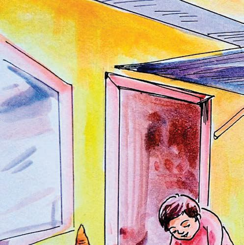<figcaption>Figure fig_ch03_p052_04 (Page 52)</figcaption></figure>
  <figure class="diagram-card" id="fig_ch03_p052_05">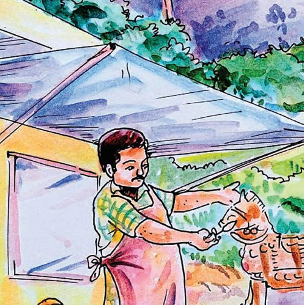<figcaption>Figure fig_ch03_p052_05 (Page 52)</figcaption></figure>
  <figure class="diagram-card" id="fig_ch03_p052_06">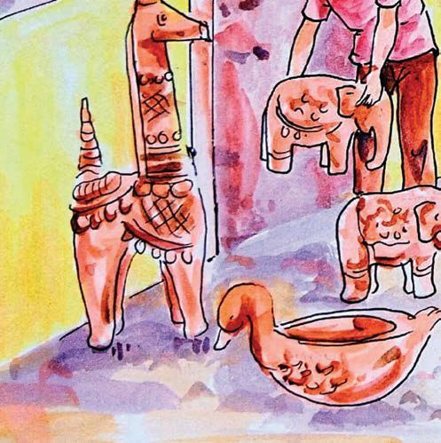<figcaption>Figure fig_ch03_p052_06 (Page 52)</figcaption></figure>
  <figure class="diagram-card" id="fig_ch03_p052_07">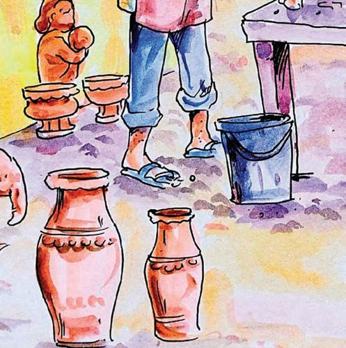<figcaption>Figure fig_ch03_p052_07 (Page 52)</figcaption></figure>
  <figure class="diagram-card" id="fig_ch03_p052_08"><figcaption>Figure fig_ch03_p052_08 (Page 52)</figcaption></figure>
</section><section class="page-section" id="page-53">
  <div class="page-header"><span class="page-number">Page 53</span></div>
  <figure class="diagram-card" id="fig_ch03_p053_01">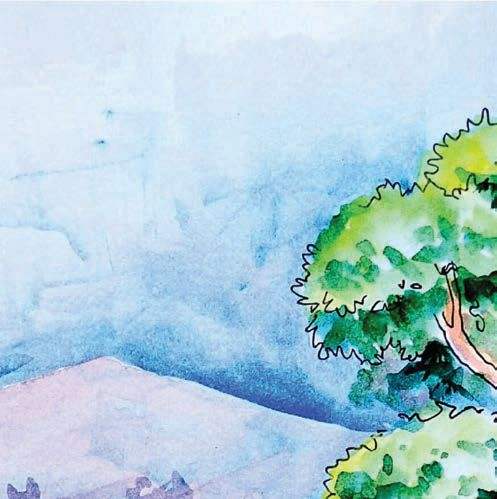<figcaption>Figure fig_ch03_p053_01 (Page 53)</figcaption></figure>
  <figure class="diagram-card" id="fig_ch03_p053_02">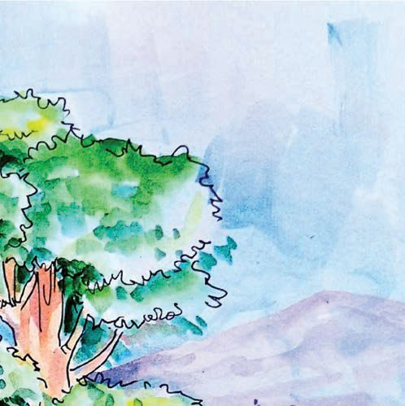<figcaption>Figure fig_ch03_p053_02 (Page 53)</figcaption></figure>
  <figure class="diagram-card" id="fig_ch03_p053_03"><figcaption>Figure fig_ch03_p053_03 (Page 53)</figcaption></figure>
  <figure class="diagram-card" id="fig_ch03_p053_04">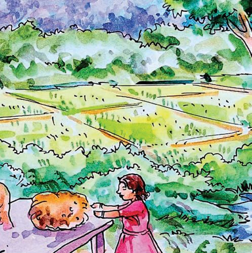<figcaption>Figure fig_ch03_p053_04 (Page 53)</figcaption></figure>
  <figure class="diagram-card" id="fig_ch03_p053_05">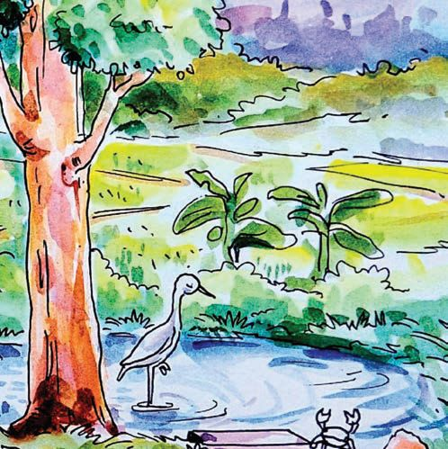<figcaption>Figure fig_ch03_p053_05 (Page 53)</figcaption></figure>
  <figure class="diagram-card" id="fig_ch03_p053_06">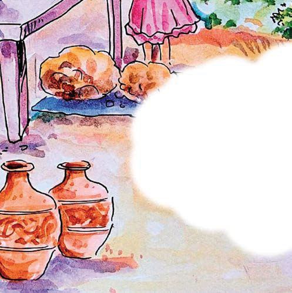<figcaption>Figure fig_ch03_p053_06 (Page 53)</figcaption></figure>
  <figure class="diagram-card" id="fig_ch03_p053_07"><figcaption>Figure fig_ch03_p053_07 (Page 53)</figcaption></figure>
  <figure class="diagram-card" id="fig_ch03_p053_08"><figcaption>Figure fig_ch03_p053_08 (Page 53)</figcaption></figure>
  <div class="page-content">
    <p>ŒĴ›†sŝc ˆĹŒš›“‚c
Ĵ
¡x‚Œšäځڛ†§ zœ“›s‘Ĭ§
––DZāÇŒĴ›Æ†›ų§ z“c ¢ˆš•sā‘c
“›¡ă}Ĺ§ “‘ŽųŒ†•DZ†Ç¡ƀ¡}ǫ
zœ“›sÇ“›“› f“”DZāÇښ›ŒĴ›¡†
fNJ›ÚųŒĴ§ 
Œ›†Œšsš¡‚c
‰
ˆǏ›†Ǐ¡ƀ}š¡‚c –cŽä›ăš¢
Ǐ
†ŒÚ§ †› †
†›Æښ†šsž</p>
  </div>
</section><section class="page-section" id="page-54">
  <div class="page-header"><span class="page-number">Page 54</span></div>
  <figure class="diagram-card" id="fig_ch03_p054_01"><figcaption>Figure fig_ch03_p054_01 (Page 54)</figcaption></figure>
  <figure class="diagram-card" id="fig_ch03_p054_02"><figcaption>Figure fig_ch03_p054_02 (Page 54)</figcaption></figure>
  <figure class="diagram-card" id="fig_ch03_p054_03"><figcaption>Figure fig_ch03_p054_03 (Page 54)</figcaption></figure>
  <figure class="diagram-card" id="fig_ch03_p054_04"><figcaption>Figure fig_ch03_p054_04 (Page 54)</figcaption></figure>
  <figure class="diagram-card" id="fig_ch03_p054_05"><figcaption>Figure fig_ch03_p054_05 (Page 54)</figcaption></figure>
  <div class="page-content">
    <p>“››ŽĹDZ
1. f”ˆ}c ˆžÅśšÚs</p>
    <p>ŒĴ›¡¡ŦƼǰ#
•
Ñ
Ñ
zĹ›¡ź
iˆ¢šuc</p>
    <p>z“c
ŒĴc</p>
    <p>ŒĴ›¡ zœ“›sÇ
•
•
•
z¢Ǟš‚ǠsÇ
•
Ñ
Ñ</p>
    <p>•
Ñ
Ñ</p>
    <p>2. sĞ†c sžĞsšŽcs‘›Úš†š›†„œ‚œŽ¡Ĺśe“Ås’›ă</p>
    <p>Œ›~š›¡} s“sÇ ¡“ǫś¢¡Ú›Ě e¢ƀšÇ
†„››¡ ŒœÄe“¢Žš}§ ˆĚ</p>
    <p>†›āÇÚ§ “œ}§
¢ˆš¡š§
|āÇÚ§
h†„›</p>
    <p></p>
    <p>he‹›Ƃš¢Ĺš}§ †›āÇ¢šz›Úų¢Ĭš#mŦ¡sšĬ§?
z¢Ǟš‚ǠsÇ–cŽä›ÚšÄ†ǰm¡ŦƼǰ ¡xƭc?</p>
    <p>‚}ÅƂ“ÅņāÇ
1. “›“›</p>
    <p>†›ā‘›ǫ sƼsÇ ¢”tŽ›ă§ †ųš› ¡ˆš}›
¡ă}Ús xšÅЧ ¢ˆƀ›Æ ˆžÚ‘¡}cŒǮc x›ŅāÇ“Žă§
¡ˆš}›¡ă}ĹŒĴ§ ˆ”ˆ¢šu›ă§ x›Ņ ‘
ā‘›Æˆ‚›ƀ›Ús</p>
    <p>2. “›“› ›†cŒĴsÇ¢”tŽ›ă§
Ǘž‘›ÆƂ„Å”†c–cv}›ƀ›
‘</p>
    <p>ڝs
54</p>
  </div>
</section><section class="page-section" id="page-55">
  <div class="page-header"><span class="page-number">Page 55</span></div>
  <figure class="diagram-card" id="fig_ch03_p055_01"><figcaption>Figure fig_ch03_p055_01 (Page 55)</figcaption></figure>
  <figure class="diagram-card" id="fig_ch03_p055_02"><figcaption>Figure fig_ch03_p055_02 (Page 55)</figcaption></figure>
  <figure class="diagram-card" id="fig_ch03_p055_03"><figcaption>Figure fig_ch03_p055_03 (Page 55)</figcaption></figure>
  <figure class="diagram-card" id="fig_ch03_p055_04">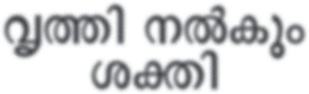<figcaption>Figure fig_ch03_p055_04 (Page 55)</figcaption></figure>
  <figure class="diagram-card" id="fig_ch03_p055_05"><figcaption>Figure fig_ch03_p055_05 (Page 55)</figcaption></figure>
  <figure class="diagram-card" id="fig_ch03_p055_06"><figcaption>Figure fig_ch03_p055_06 (Page 55)</figcaption></figure>
  <figure class="diagram-card" id="fig_ch03_p055_07"><figcaption>Figure fig_ch03_p055_07 (Page 55)</figcaption></figure>
  <figure class="diagram-card" id="fig_ch03_p055_08"><figcaption>Figure fig_ch03_p055_08 (Page 55)</figcaption></figure>
  <figure class="diagram-card" id="fig_ch03_p055_09"><figcaption>Figure fig_ch03_p055_09 (Page 55)</figcaption></figure>
  <figure class="diagram-card" id="fig_ch03_p055_10"><figcaption>Figure fig_ch03_p055_10 (Page 55)</figcaption></figure>
  <div class="page-content">
    <p>4</p>
    <p>ƾś†Æsc
”Þ›
f¢ŽšuDZŒǫzœ“›‚Ĺ›†§
ƽśƂ š†Œš¡ų§
Œ†Ǡ›š¢Ƽš?g¢‚ƀǮ›
†›āÇڝǫ–c”āÇ
¢xš„›Úž</p>
    <p>ǗžÇˆšÅ¡Œź›¡ź¢†Ķ‚ǴśÆ“DZޛ”x›‚Ǵ“Œš›ŠŰ¡ƀЧ
ź
¢šÜÅsĞ›sÇÚ§ 㚡–}ĹsĞ›sÇ¢šÜ¢š}§ †›Ž“ ›
–c”āÇ¢xš„›ă
¢šÜÅ –c”āÇ¡ÚƼǰiŎādžƳs›
¢šÜ¡}㚖›Æˆ¡ÿ}Ĺ‚›†¢”•ceÄ‚¡ź ¢†šĞŠ
ڛÆs›ă‚§“š›Úǰ
s‘›Ú¢Ơš’cŒǮ
ƂƽśsÇ¡xƭ¢Ơš’c
†šŒ›š¡‚£ss‘›Æ
e’Ú§ˆŽ‘šÄ
–š DZ‚Ĭ§g‚›Æˆ
¢ŽšušÚ‘ŒĬšsǰ</p>
    <p>¢–šƀ›Ğ§£ssÇ
s’s¢ƠšÇ
¢ŽšušÚÇ
†”›ă¢ˆšsų
55</p>
  </div>
</section><section class="page-section" id="page-56">
  <div class="page-header"><span class="page-number">Page 56</span></div>
  <figure class="diagram-card" id="fig_ch03_p056_01">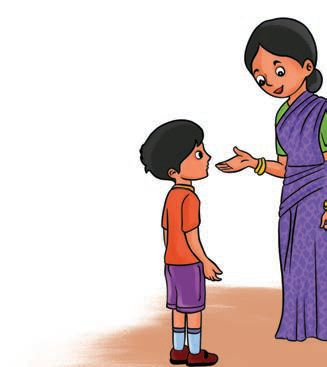<figcaption>Figure fig_ch03_p056_01 (Page 56)</figcaption></figure>
  <figure class="diagram-card" id="fig_ch03_p056_02"><figcaption>Figure fig_ch03_p056_02 (Page 56)</figcaption></figure>
  <figure class="diagram-card" id="fig_ch03_p056_03"><figcaption>Figure fig_ch03_p056_03 (Page 56)</figcaption></figure>
  <figure class="diagram-card" id="fig_ch03_p056_04">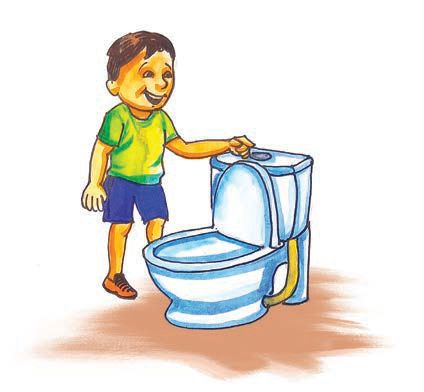<figcaption>Figure fig_ch03_p056_04 (Page 56)</figcaption></figure>
  <figure class="diagram-card" id="fig_ch03_p056_05"><figcaption>Figure fig_ch03_p056_05 (Page 56)</figcaption></figure>
  <figure class="diagram-card" id="fig_ch03_p056_06"><figcaption>Figure fig_ch03_p056_06 (Page 56)</figcaption></figure>
  <figure class="diagram-card" id="fig_ch03_p056_07">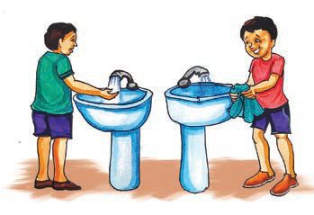<figcaption>Figure fig_ch03_p056_07 (Page 56)</figcaption></figure>
  <div class="page-content">
    <p>Ǘž‘›Æ†›ųc
“ų‚¢Ƽ ¢ˆš›
sƭc Œt“c
¢–šƀ›Ğ§s’sž</p>
    <p>¢}š§Ǯ§
iˆ¢šu›ă‚›†¢”•c
£ssÇ¢–šƀ›Ğ§
s’s¡Œų§
ˆų‚§mŦ
¡sšĬš›Ž›Úǰ?</p>
    <p>x›ŅāÇsĬ¢Ƽš
m¢ƀš¡’š¡Úš§ ǰ
†ǰ£ssÇ¢–šƀ›Ğ§ s
s’s›ƽśš¢ÚĬ‚§?
‹äc s’›Úų‚›†ŒƠ§
z
‹äc s’›ă‚›†¢”•c
z ¢}š§
Ǯ§iˆ¢šu›ă‚›†¢”•c
z šŅs’›Ě§Œ}ā›“Ž¢ƠšÇ
z</p>
    <p>z
z</p>
    <p>ƾśǬ£ssÇ
sžĞsš¢Ž †›ā‘¡}£ssÇƽśǫ‚š¢š?
†Œ¡Úšų§ˆŽ›¢”š ›ăš¢š?
pŽ ŠÚǮ›Æ ¡“ǫc m}Ús ‚
e‚›Æ †›ųc pŽ øš–§
¡“ǫ¡Œ}Ĺ§¢Œ”ƀĹ§ŒšǮ›“Ʃs</p>
    <p>56</p>
  </div>
</section><section class="page-section" id="page-57">
  <div class="page-header"><span class="page-number">Page 57</span></div>
  <figure class="diagram-card" id="fig_ch03_p057_01">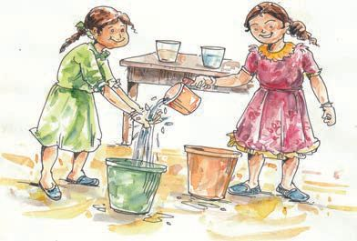<figcaption>Figure fig_ch03_p057_01 (Page 57)</figcaption></figure>
  <figure class="diagram-card" id="fig_ch03_p057_02">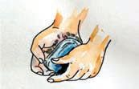<figcaption>Figure fig_ch03_p057_02 (Page 57)</figcaption></figure>
  <figure class="diagram-card" id="fig_ch03_p057_03"><figcaption>Figure fig_ch03_p057_03 (Page 57)</figcaption></figure>
  <figure class="diagram-card" id="fig_ch03_p057_04">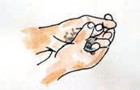<figcaption>Figure fig_ch03_p057_04 (Page 57)</figcaption></figure>
  <figure class="diagram-card" id="fig_ch03_p057_05">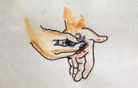<figcaption>Figure fig_ch03_p057_05 (Page 57)</figcaption></figure>
  <figure class="diagram-card" id="fig_ch03_p057_06">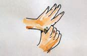<figcaption>Figure fig_ch03_p057_06 (Page 57)</figcaption></figure>
  <figure class="diagram-card" id="fig_ch03_p057_07">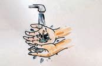<figcaption>Figure fig_ch03_p057_07 (Page 57)</figcaption></figure>
  <div class="page-content">
    <p>£s s’s› ¡“ǫc¢”tŽ›Úš†š›pŽp’›ĚŠÚǮ§m}Ús
q¢ŽšŽĹŽš›p’›ĚŠÚǮ›¢Ú§£ssÇs’ss
mƼš“Žc£ss’s›‚›†
¢”•c s’s› ¡“ǫc
¢”tŽ›ăŠÚǮ›Æ†›ų§pŽ
øš–§¡“ǫ¡Œ}Ĺ§f„DZc
ŒšǮ›¡“ăøš–›†}Ĺ§“Ʃs
g†› ŽĬ øš–›¡c ¡“ǫc
‚šŽ‚ŒDZc ¡xƭž
mŦš§†›ā‘¡} s¡ĬĹÆ?
g¢ƀšÇ†›āÇmā¡†š§£s s’s›‚§?
†
mā¡†š§ƽśš›£ss’¢sĬ‚§?
£ss’s›¡ź vĞāÇx›ŅœsŽ›ă›Ž›Úų‚§†›Žœä›Úž
1.</p>
    <p>£ssdž†ă§¢–šƀ§ˆ‚ƀ›Ús</p>
    <p>2.</p>
    <p>£s¡“ǫsÇsžĞ›Ĺ›Žƣ›ƽśšÚs</p>
    <p>3.</p>
    <p>£ss‘¡} ˆ›s“”“c “›ŽsÇڛ}›c
ƽśšÚs</p>
    <p>4. †tā‘c “›Žs‘¡}e÷‹šu“c</p>
    <p>£s¡“ǫ›ÆiŽă§ƽśšÚs
5. “›Žs‘c£sڝ’s‘c Œ£s</p>
    <p>iˆ¢šu›ă§ƽ
ĹšÕ‚››Æ‚›Žƣ›
‚
ƽśšÚs
6.</p>
    <p>p’sų ¡“ǫśÆ£ssdžųš›s’s›
ƽśǫ‚›¡sšĬ§‚}Ʃs
57</p>
  </div>
</section><section class="page-section" id="page-58">
  <div class="page-header"><span class="page-number">Page 58</span></div>
  <figure class="diagram-card" id="fig_ch03_p058_01"><figcaption>Figure fig_ch03_p058_01 (Page 58)</figcaption></figure>
  <figure class="diagram-card" id="fig_ch03_p058_02">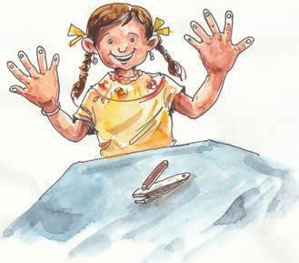<figcaption>Figure fig_ch03_p058_02 (Page 58)</figcaption></figure>
  <figure class="diagram-card" id="fig_ch03_p058_03"><figcaption>Figure fig_ch03_p058_03 (Page 58)</figcaption></figure>
  <div class="page-content">
    <p>g‚šm¡ź
ƽśǫ£ssÇ
|šÄ†tc ¡“Ğ›
ƽśšÚ›</p>
    <p>£ssLjžÅŒš›ƽśǫ‚š“¡Œÿ›Æ£ss‘›¡ †tc
¡“Ğ›ƽśšÚce¡Ƽÿ›Æ†tś†}››Æe}›Ěsž}ų
Ğ
e’ÚsÇ‹ä¢Ĺš¡}šƀc Ž
”ŽœŽĹ›†ǫ›¡Ĺc
sĞ›s‘¡} ŒǮ–c”āÇÚ§¢šÜņÆs›iŎāÇsž}›
eÄ‚¡ź
ŠÚ›Æm ‚
Ú
’‚››Žųe‚§†ŒÚc “š›Úǰ
ƽś›ƼšĹ¢‚š
e’ÚˆŽĬ¢‚š
††Ě¢‚šf
“ȻāÇ Ž›ÚŽ‚§
g“›Æ¢ŽšušÚÇ
“‘Žceā¡†¡xš›
xā§‚}ā›
¢Žšuā‘Ĭšsc</p>
    <p>Žš“›¡‹äĹ›†
ŒƠc Ņ
ŽšŅ››Æ
‹äĹ›†¢”•“c
ˆƼsÇƖ•§¡xƪ§
ƽśšÚc
e¡Ƽÿ›Æ
ˆƼsÇÚ§¢s}“Žǰ</p>
    <p>ŒšǗ§ Ž›Úų‚§mŦ›†š§mų
–c”Ĺ›†ǫiŎceÄ
m’‚šÄ“›Ğ¢ˆš›
e¡†–—š›Úš¢Œš?</p>
    <p>58</p>
  </div>
</section><section class="page-section" id="page-59">
  <div class="page-header"><span class="page-number">Page 59</span></div>
  <figure class="diagram-card" id="fig_ch03_p059_01"><figcaption>Figure fig_ch03_p059_01 (Page 59)</figcaption></figure>
  <figure class="diagram-card" id="fig_ch03_p059_02"><figcaption>Figure fig_ch03_p059_02 (Page 59)</figcaption></figure>
  <figure class="diagram-card" id="fig_ch03_p059_03"><figcaption>Figure fig_ch03_p059_03 (Page 59)</figcaption></figure>
  <figure class="diagram-card" id="fig_ch03_p059_04"><figcaption>Figure fig_ch03_p059_04 (Page 59)</figcaption></figure>
  <figure class="diagram-card" id="fig_ch03_p059_05"><figcaption>Figure fig_ch03_p059_05 (Page 59)</figcaption></figure>
  <figure class="diagram-card" id="fig_ch03_p059_06"><figcaption>Figure fig_ch03_p059_06 (Page 59)</figcaption></figure>
  <figure class="diagram-card" id="fig_ch03_p059_07">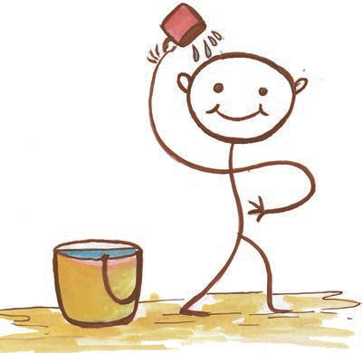<figcaption>Figure fig_ch03_p059_07 (Page 59)</figcaption></figure>
  <div class="page-content">
    <p>ƾśǬˆƽsÇ
ˆƼsÇƽśš¢ÚĬ‚›¡ź Ƃš š†DZc †›āÇڏ›šŒ¢Ƽš
†ƣ¡} ˆƼ¢‚ÚÆ”Ž›š Žœ‚››š¢š?
x›Ņc †›Žœä›Úž</p>
    <p>Ɩ•§ Ž
xŽ›ă
ˆ›}›Ús</p>
    <p>Œ¢ųšĞcˆ›¢ųšĞc
Ɩ•§ ¡xƭs</p>
    <p>Œsdž›Ž›¡ ˆƼsÇ
Œs‘›Æ†›ųc ‚š¢’šĞc
sœ’§†›Ž›¡ ˆƼsÇ
‚š¡’ †›ųc Œs‘›¢šĞc
Ɩ•§¡xƭs</p>
    <p>x“ƩšÄiˆ¢šu›Úų
ˆƼs‘¡}Ƃ‚c
Œ¢ųšĞcˆ›¢ųšĞc
†ųš›Ɩ•§¡xƭs</p>
    <p>ˆƼs‘¡} es“”“c
Ɩ•§¡xƭs</p>
    <p>Ɩ•§iˆ¢šu›ă‚¡ų
†š“cƽśšÚs</p>
    <p>ˆƼ¢‚ڐ›¡ź ”Ž›š Žœ‚›ãšǠ›Æe“‚Ž›ƀ›Úž</p>
    <p>ƾśǬ”ŽœŽc
”ŽœŽcƽśšÚų‚›†§s‘›
e‚DZš“”DZŒš§ †›āÇs‘›Úų
Žœ‚› u
fcuDZśž¡} e“‚Ž›ƀ›Úš¢Œš?
s‘›Ú¢ƠšÇm¡ŦƼǰsšŽDZā‘š§
NJŗ›¢ÚĬ‚§?
z</p>
    <p>mƼš„›“–“cs‘›Úc</p>
    <p> ”ŽœŽ‹šuādžųš›
¢–šƀ›Ğ§s’s›
ƽśšÚc</p>
    <p>z</p>
    <p>59</p>
  </div>
</section><section class="page-section" id="page-60">
  <div class="page-header"><span class="page-number">Page 60</span></div>
  <figure class="diagram-card" id="fig_ch03_p060_01"><figcaption>Figure fig_ch03_p060_01 (Page 60)</figcaption></figure>
  <figure class="diagram-card" id="fig_ch03_p060_02"><figcaption>Figure fig_ch03_p060_02 (Page 60)</figcaption></figure>
  <div class="page-content">
    <p> Œ›†Œš ¡“ǫśÆs‘›ÚŽ‚§</p>
    <p>z</p>
    <p> ”ŽœŽc ¢‚šÅŝų‚›†š›iā›‚cƽśǫ‚Œš
¢‚šÅŧiˆ¢šu›Úc</p>
    <p>z</p>
    <p> ŒǮǫ“Ž¡} ¢‚šÅŧiˆ¢šu›Úš‚›Ž›Úc</p>
    <p>z
z</p>
    <p>iˆ¢šuś†¢”•c ¢‚šÅŧs’s›Ú›–žä›Úc</p>
    <p>£ss’sÆ ˆƼ¢‚ÚÆs‘›mų›“¡} ”Ž›š Žœ‚›sÇ
Œ†Ǡ›š¢Ƽš
”x›‚Ǵ”œā‘Œš› ŠŰ¡ƀЧ Œ†Ǡ›šÚ›
sšŽDZāÇ
Ž
“œĞ›ǫ“ŽŒš›xÅă ¡xƭŒ¢Ƽš
“DZޛ”x›‚Ǵc ˆš› 㛠ÿ
¡Ƽÿ›Æ ˆ“›
¢ŽšuāÇ
ˆ›}›¡ˆ}šÄ –š DZ‚Ĭ§ “›‘Úc z¢„š•c ¡xš›
xā§‚}ā›“ e“›Æx›‚š§”x›‚Ǵc ˆš›ăšÆ
ˆ¢Žšuā¡‘cesǮ›†›ÅĹǰ</p>
    <p>“Dzޛ”x›‚ǵś†š›|šÄm}Úų
‚œŽŒš†āÇ</p>
    <p>m¡ź”x›‚ǵc
m¡źiŎ“š„›‚ǵc</p>
    <p>60</p>
  </div>
</section><section class="page-section" id="page-61">
  <div class="page-header"><span class="page-number">Page 61</span></div>
  <figure class="diagram-card" id="fig_ch03_p061_01"><figcaption>Figure fig_ch03_p061_01 (Page 61)</figcaption></figure>
  <figure class="diagram-card" id="fig_ch03_p061_02"><figcaption>Figure fig_ch03_p061_02 (Page 61)</figcaption></figure>
  <figure class="diagram-card" id="fig_ch03_p061_03"><figcaption>Figure fig_ch03_p061_03 (Page 61)</figcaption></figure>
  <figure class="diagram-card" id="fig_ch03_p061_04"><figcaption>Figure fig_ch03_p061_04 (Page 61)</figcaption></figure>
  <figure class="diagram-card" id="fig_ch03_p061_05">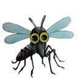<figcaption>Figure fig_ch03_p061_05 (Page 61)</figcaption></figure>
  <div class="page-content">
    <p>ˆŽ›–Ž”x›‚ǵc
†Œ¡ÚšŽ†š}sc s‘›Úǰ
sƒšˆšŅāÇŒ›†œăs}“¡Úš‚s§x›Ĭ¡†›</p>
    <p>Žcucpų§  h㍝c¡sš‚scsĬŒĞų
s§  —¢š Œ›ǡÅ Œ›Äm¡ų ˆŽ›xŒ¢Ĭš?
hă</p>
    <p> ———ˆŽ›xŒ¢Ĭš¢ųš?</p>
    <p></p>
    <p> ¢xĞÄ Œ†•DZŽ¡} ŽÞc s}›Úų “œŽ†¢Ƽ?
†›Ž“ ›¢ŽšuāLjŽĹų ¢xĞ¡†ˆŽ›x¡ƀ}šÄ
s’›Ě‚›Æ–¢Ŧš•c</p>
    <p>¡sš‚s§  e¡‚¡‚ |šÄ sšŽc
Œ†•DZÅÚ§ x›ÚÄ
•
u†› ¡ÿ›ƀ†›Œ¢› ŒŦ§‚}ā› ¢ŽšuāÇ
ˆsŽųe¡‚†›Ú§ “› “›•ŒŒĬšÚųĬ§
ˆ¢ämŦ¡xƭc?
hă</p>
    <p> ¢xĞÄm“›¡}š§‚šŒ–c?</p>
    <p>¡sš‚s§  h†uŽĹ›ÆĹ¡ųe’Úxš›ųŽ›¡s Œš›†DZc
sųsž}›Ú›}ڝų “œ}›¢Ƽ#e“›¡} e’Ú¡“ǫc
¡sЛڛ}ڝų Ǚā‘Ĭ§ |āÇ e“›¡}
61</p>
  </div>
</section><section class="page-section" id="page-62">
  <div class="page-header"><span class="page-number">Page 62</span></div>
  <figure class="diagram-card" id="fig_ch03_p062_01"><figcaption>Figure fig_ch03_p062_01 (Page 62)</figcaption></figure>
  <figure class="diagram-card" id="fig_ch03_p062_02"><figcaption>Figure fig_ch03_p062_02 (Page 62)</figcaption></figure>
  <figure class="diagram-card" id="fig_ch03_p062_03">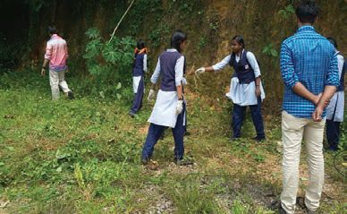<figcaption>Figure fig_ch03_p062_03 (Page 62)</figcaption></figure>
  <figure class="diagram-card" id="fig_ch03_p062_04">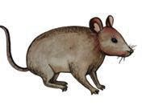<figcaption>Figure fig_ch03_p062_04 (Page 62)</figcaption></figure>
  <figure class="diagram-card" id="fig_ch03_p062_05">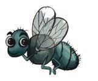<figcaption>Figure fig_ch03_p062_05 (Page 62)</figcaption></figure>
  <div class="page-content">
    <p>ŒĞ›Ğ§
¡ˆŽs›Ǚc sƭ}ڛ
s
g‚¢ˆš¡hăƩcm›Ʃc
mŦš“c ˆš†Ĭš“s?
e“Ž¡} –c‹š•c sž}›sžĞ›¢ăÅŧ†š}sc ˆžÅśšÚž
ˆžÅśšÚ› †š}scãšǠ›Æe“‚Ž›ƀ›Úž
h†š}sś¡ sƒšˆšŅāÇf¡ŽƼšŒš§?
e“ ¡ˆŽsų
–š—xŽDZāÇn¡‚ƼšŒš§?
Ž
e“ Œ†•DZÅڝĬšÚųƂLjāÇm¡ŦƼšŒš§?
f¢ŽšuDZ¢Ĺš¡}zœ“›Ú¡Œÿ›Æ†ƣ¡} “œ}c ˆŽ›–Ž“c
ƽśǫ‚š›Ž›Úc ƽś›ƼšĹ g}ā‘›š§
¡sš‚s§hăm›Œ‚š“ ¡ˆŽsų‚§gŎczœ“›sÇ
¡ˆŽsų‚š§ˆ¢Žšuā‘c ˆ}ŽšÄsšŽŒš“ų‚§
ˆsÅă“Dzš ›s¡‘
Ƃ‚›¢Žš ›Úsmų
äDz¢Ĺš}sž}›
÷šŒˆĕšĹ›¡ź¢†Ķ‚ǵśÆ
mƽš“šÅs‘›c£Ħ¢
Ƃ“Åņādž}ś
ˆĕšĹ›¡x›“šÅs‘›Æ
¡ÿ›ƀ†››¢ƀšÅЧ¡xƫ‚›†šÆ
¢Žšuš“š—sŽš
¡sš‚ssÇ¡ˆŽsų‚§
‚}ų‚›†š§”xœsŽ
Ƃ“Åņādž}ś‚§
“šÅĹ “š›ă¢Ƽš . mŦš§  £Ħ¢ Ƃ“ÅņāÇ
mų‚¡sšĬ§ i¢Ŕ”›Úų‚§? †Æs››Ž›Úų “›“Žc
“š›Úž</p>
    <p>£Ħ¢
†ƣ¡} ˆŽ›–ŽĹ§i¢ˆä›Ú¡ƀЈšŅāÇx›ŽĞ}Åsƀ›
sƀ›¡}e}ƀ§s‘›ƀšĞāÇ‚}ā›¡“ǫc¡sĞ›†›ÆښÄ
–š DZ‚ǫ šŽš‘c “ǘÚÇ iĬ§ g“›Æ ¡sš‚ssÇ
ŒĞ›}šÄ –š DZ‚Ĭ§ mЧ „›“–c ¡sšĬ§ ŒĞ“›Ž›Ě§
62</p>
  </div>
</section><section class="page-section" id="page-63">
  <div class="page-header"><span class="page-number">Page 63</span></div>
  <figure class="diagram-card" id="fig_ch03_p063_01"><figcaption>Figure fig_ch03_p063_01 (Page 63)</figcaption></figure>
  <figure class="diagram-card" id="fig_ch03_p063_02">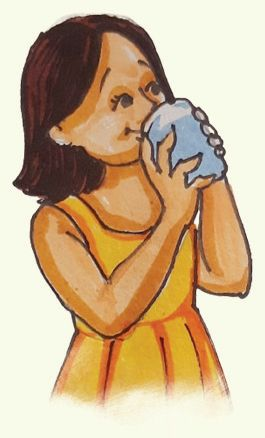<figcaption>Figure fig_ch03_p063_02 (Page 63)</figcaption></figure>
  <div class="page-content">
    <p>ˆžÅĴ“‘Åă¡Ĺce‚›†šÆq¢Žšn’„›“–Ĺ›cgŎc
“ǘÚ‘›Æ ¡sЛڛ}ڝų ¡“ǫc Œ›ăs‘sc ¡“ǫc
¡sЛڛ}ښÄ–š DZ‚ǫ“ǘÚdžœÚc¡xƭsc ¢“c
h”xœsŽƂ“ÅņŒš§£Ħ¢</p>
    <p>zĹ›ž¡}c¢ŽšucˆsŽDZ
ˆŽ›–ŽƂ¢„”ā‘›Æ ¡sЛڛ}ڝų Œ›†zĹ›ž¡}c
”ŗŒƼšĹs}›¡“ǫśž¡}c ¢ŽšuāÇ“ŽšÄ–š DZ‚Ĭ§
“›‘Úc ŒĚƀ›Ĺc¢sš‘ £}¢‰š§§‚}ā› ¢ŽšuāÇ
zĹ›ž¡} ˆsŽšĬ§
h¢ŽšuāÇ“Žš‚›Ž›ÚšÄ†ŒÚ§m¡ŦƼǰŒÄsŽ‚sÇ
m}Úǰ?
z
s}›ÚšÄ‚›‘ƀ›ăš› zciˆ¢šu›Ús
z
z</p>
    <p>ˆš†œx›s›Ň
“›‘Ú ¢ŽšuāÇiĬššÆ
†ƣ¡} Ž
”ŽœŽĹ›¡ zǰ”c
†Ǐ¡ƀ}ų †Ǐ¡ƀĞ zǰ”c
”ŽœŽĹ›†§‚›Ž›ă†Æsc
Ž
g‚›†š›‚š¡’ƀų“ ¢Žšu›Ú§
¡sš}Úǰ
iƀ›Ğ s̛¡“ǫc
z
iƀc ˆĕ–šŽc ¢xÅĹ
†šŽā¡“ǫc
z
iƀ›Ğ –c‹šŽc
z sŽ›Ú›Ä ¡“ǫc
z</p>
    <p>ƂšƒŒ›sš¢ŽšuDZ¢sůśÆ†›ųc
‹›ÚųpfÅm–§
‚›‘ƀ›ăš› zĹ›ÆsÚ›
g}Ʃ›}Ʃ§†Æssc ¡xƭc</p>
    <p>63</p>
  </div>
</section><section class="page-section" id="page-64">
  <div class="page-header"><span class="page-number">Page 64</span></div>
  <figure class="diagram-card" id="fig_ch03_p064_01">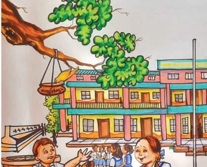<figcaption>Figure fig_ch03_p064_01 (Page 64)</figcaption></figure>
  <figure class="diagram-card" id="fig_ch03_p064_02">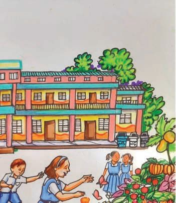<figcaption>Figure fig_ch03_p064_02 (Page 64)</figcaption></figure>
  <figure class="diagram-card" id="fig_ch03_p064_03">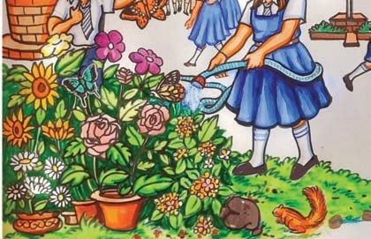<figcaption>Figure fig_ch03_p064_03 (Page 64)</figcaption></figure>
  <figure class="diagram-card" id="fig_ch03_p064_04">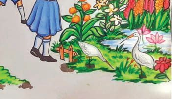<figcaption>Figure fig_ch03_p064_04 (Page 64)</figcaption></figure>
  <div class="page-content">
    <p>m¡ź “›„Dzšc ”x›‚ǵ“›„Dzšc</p>
    <p>h“›„DZšĹ›¡ź Ƃ¢‚DZs‚sÇm¡ŦƼǰ?
†ƣ¡} “›„DZšcƽśǫ‚š¢š# “››ŽĹǰ
m¡ź “›„Dzšc
xƀx“sÇ
sž}›Ú›}ڝų›Ƽ
¡“ǫc ¡sЛڛ}ڝų›Ƽ
“›„DZš
ˆŽ›–Žc</p>
    <p>ƃšǡ›s§Œš›†DZā‘›Ƽ
Œš›†DZā¡‘ ‚Žc‚›Ž›ă§
†›¢äˆ›Úų‚›†ǫ
Œš›†DZڞ}sÇiĬ§
64</p>
    <p>9²¡xƮž</p>
  </div>
</section><section class="page-section" id="page-65">
  <div class="page-header"><span class="page-number">Page 65</span></div>
  <div class="page-content">
    <p>Œššxƀx“sÇ
mų›“›Ƽ
ãšǠ§Œ›</p>
    <p>xšÅНsÇ¢ˆšǫ
ˆ~¢†šˆsŽāÇ¡ˆš}›
ˆ›}›ă‚Ƽ
Œš›†DZā¡‘ ‚Žc ‚›Ž›ă§
†›¢äˆ›Úų‚›†ǫ
Œš›†DZڞ}s‘Ĭ§
ˆšŅāÇƽśǫ‚š§</p>
    <p>ˆšxsƀŽ</p>
    <p>Œ›†zc¡sЛڛ}ڝų›Ƽ
‹äš“”›ǏāÇx›‚›
s›}ڝų›Ƽ
ƽśǫ‚š§</p>
    <p>ŒžŅƀŽ sڞ–§ f“”DZś†§¡“ǫc
‹DZŒš§
“›„DZšĹ›¡ ŒǮǙā‘š £Œ‚š†c£ss’sųg}āÇ
i„DZš†cmų›“ †›Žœä›Úų‚›†§m¡ŦƼǰsšŽDZāLjЛs›Æ
sžĞ›¢ăÅÚǰ? ˆĞ›s ˆžÅśšÚ›s¡Ĭ՝sÇe“‚Ž›ƀ›Úž
†ƣ¡}ǗžÇˆŽ›–ŽĹ§m“›¡}¡ƼšŒš§sž}‚ÆŒš›†DZāÇ
}
sš¡ƀ}ų‚§?
Ǘž‘›¡ź ¢Žtšx›Ņc‚ƭššÚ› sž}‚Æ Œš›†DZŒǫǙāÇ
x“ƀ†›Ĺ›csĚ Œš›†DZŒǫǙāÇŒĚ†›Ĺ›c
ƽśǫǙāÇˆă†›Ĺ›c ¢Žt¡ƀ}Ĺž
“›„DZš¡Ĺ sž}‚Æƽśǫ‚šÚų‚›†§g†› c
cm¡ŦƼǰ
¡xƭš†š“c?
”xœsŽƂ“Åņā‘›Æ†ŒÚc ˆÿš‘›s‘šsǰ</p>
    <p>Œš›†Dzā¡‘‚Žc‚›Ž›ÚDZ
Ǘž‘›Æ Œš›†DZā¡‘ ‚Žc‚›Ž›ă§ †›¢äˆ›Úų‚›†§ ¢“Ĭ›
Œš›†DZڞ}sÇ¡“ă›Ğǫ‚§†›āÇsĬ›Ğ›¢Ƽ?
65</p>
  </div>
</section><section class="page-section" id="page-66">
  <div class="page-header"><span class="page-number">Page 66</span></div>
  <figure class="diagram-card" id="fig_ch03_p066_01">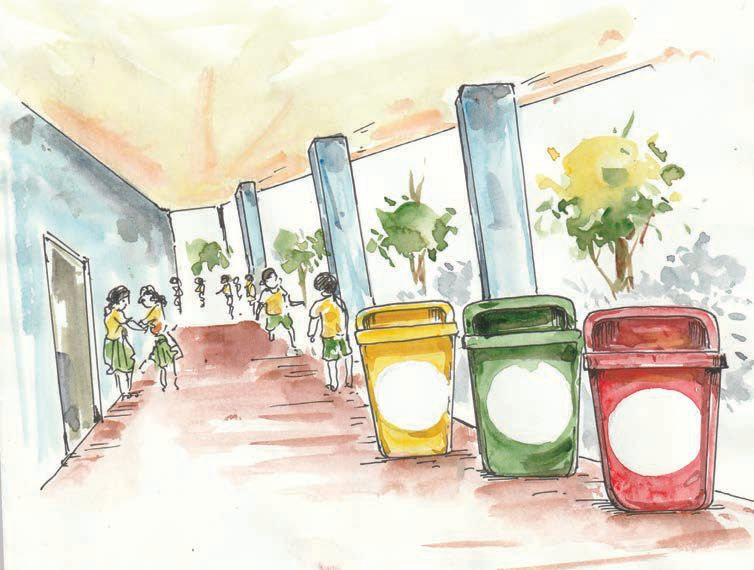<figcaption>Figure fig_ch03_p066_01 (Page 66)</figcaption></figure>
  <figure class="diagram-card" id="fig_ch03_p066_02"><figcaption>Figure fig_ch03_p066_02 (Page 66)</figcaption></figure>
  <figure class="diagram-card" id="fig_ch03_p066_03">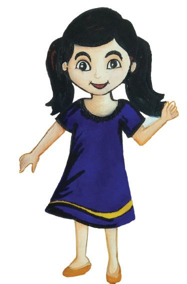<figcaption>Figure fig_ch03_p066_03 (Page 66)</figcaption></figure>
  <figure class="diagram-card" id="fig_ch03_p066_04"><figcaption>Figure fig_ch03_p066_04 (Page 66)</figcaption></figure>
  <div class="page-content">
    <p>e£z“
Œš›†DZc</p>
    <p>£z“
Œš›†DZc</p>
    <p>eˆs}
sŽŒš
Œš›†DZc</p>
    <p>mƼš
Œš›†DZā 
‘c
pŽˆšŅśÆ
gКƢˆš¢Ž?</p>
    <p>mŦ¡sšĬš›Ž›ÚcmƼš
Œš›†DZā‘cpŽŒ›ă§g}šĹ‚§?</p>
    <p>ŒĴ›Æe’s›¢ăŽų‚ceƼšĹ‚Œš Œš›†DZā‘Ĭ§
Ĵ
‹äĹ›¡źc ˆăڏ›¡}ce“”›ǏāÇ¢ˆšǫ
e’sų “ǘÚ¡‘ £z“Œš›†DZāÇ mųc ƃšǡ›s§
¢ˆšǫe’sšĹ “ǘÚ¡‘ e£z“Œš›†DZāÇmųc
ˆųg¢ɇš›s§ e ”
“”›ǏāÇiˆ¢šu”ž†DZŒš
ŒŽųsÇ ŠÇŠsÇ ‚}ā›“š§ eˆs}sŽŒš
Œš›†DZāÇ
66</p>
  </div>
</section>
    </main>
    <footer>
      <div class="nav-bar"><a href="part_1_chapter_02.html">← Chapter 2 (Pages 27-46)</a><a href="index.html">☰ Index</a><a href="part_1_chapter_04.html">Chapter 4 (Pages 67-72) →</a></div>
      <p style="text-align: center; font-size: 0.85rem; color: var(--text-muted); margin-top: 2rem;">
        Kerala SCERT Class 3 Basic_science (Malayalam Medium) - Extracted Study Text
      </p>
    </footer>
  </div>
</body>
</html>
